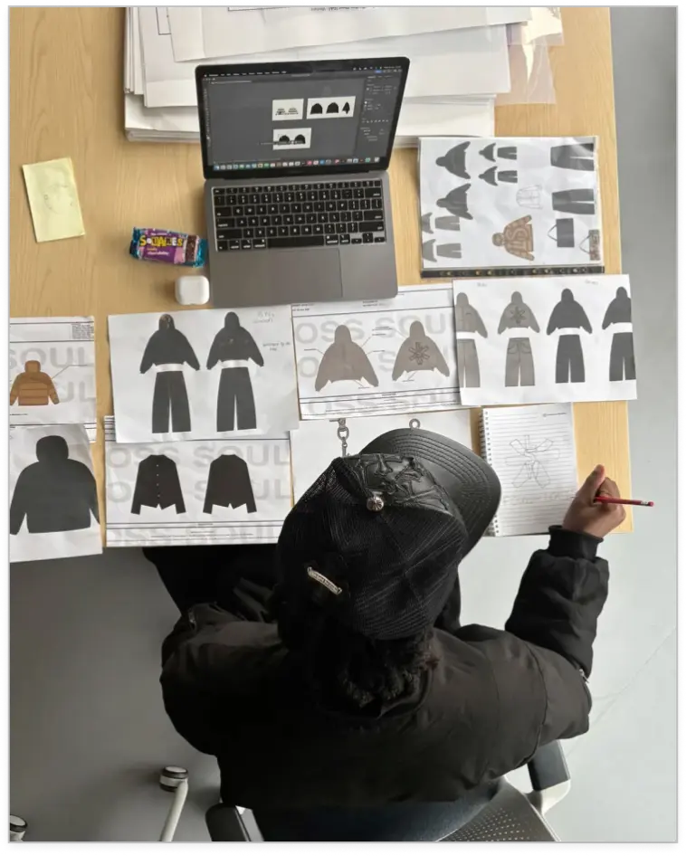
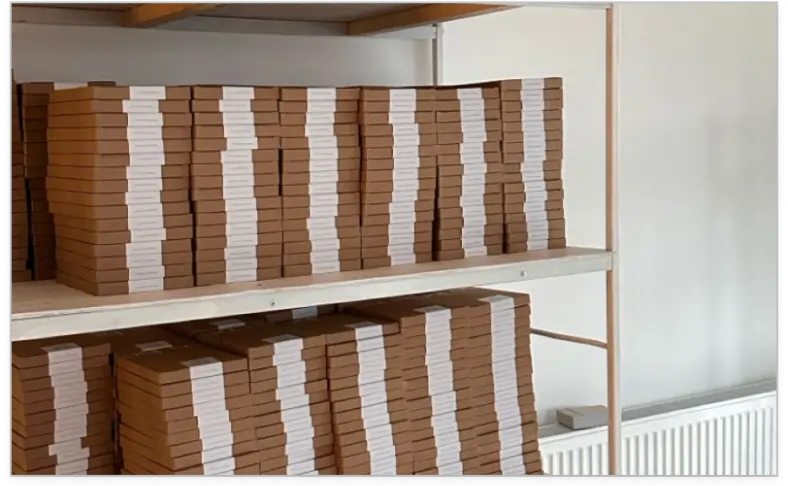
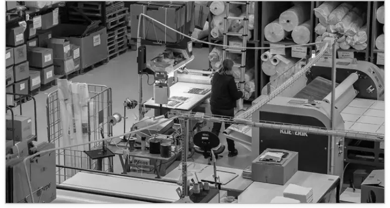
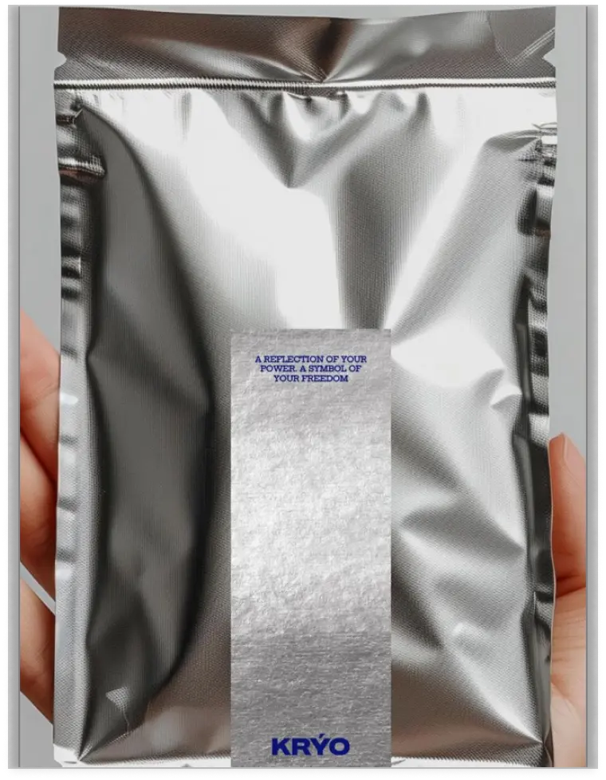
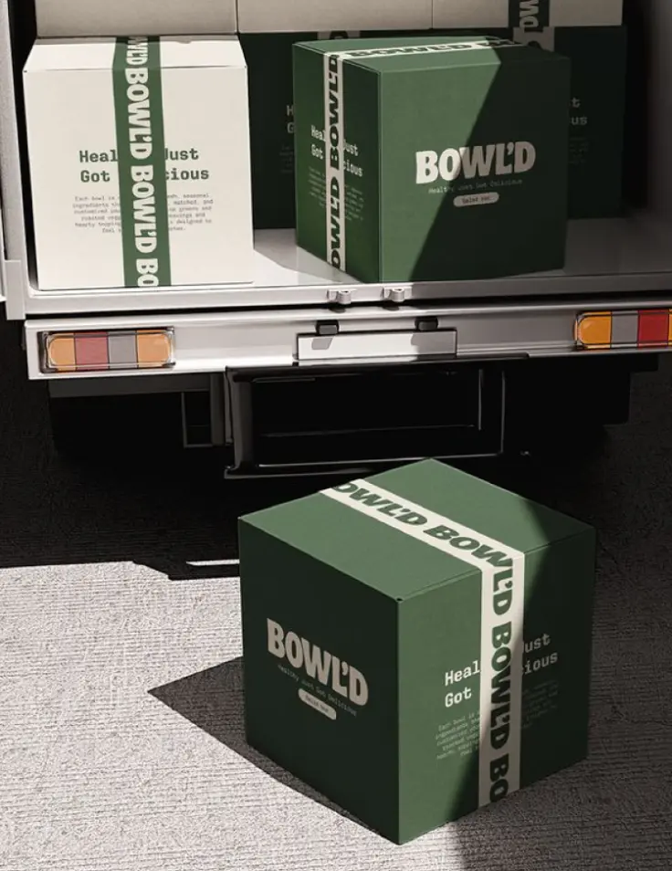

Review
→We look at your needs, existing suppliers and what you need from a partnership.
Strong solutions need reliable partners.
TÓKI helps you navigate supplier relationships, capabilities and
opportunities — ensuring that your projects are executed smoothly
and effectively.
making sure the right partners are in place to support your
business.
We look at your needs, existing suppliers and what you need from a partnership.
We connect your requirements with suppliers that have the right capabilities and experience.
We help create clarity around expectations, quality, cost and ways of working.
We stay involved as things move forward — helping communication and collaboration run smoothly.
Supplier Partnerships
The right supplier is more than someone who can make something.
TÓKI helps create strong connections between businesses and suppliers — bringing clarity to expectations, capabilities and communication so partnerships work beyond the first order.




Aura — Packaging Design
Aura — Packaging Design

Aura — Packaging Design